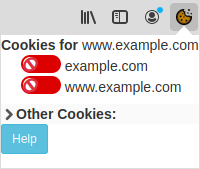
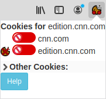
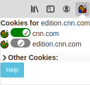
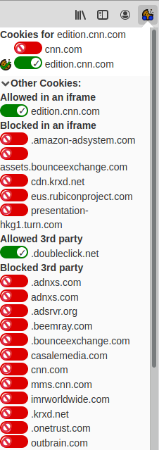

Introduction
CookieMaster is a WebExtension for Firefox that aims to provide control of cookies to ordinary users. It is inspired by the old pre-WebExtensions add-on called CookieMonster, although with some necessary differences for being a WebExtension, and that I wrote it from scratch.
About cookies
Cookies are divided into two types: first-party, and third-party. First-party are where the cookie is for the page you are browsing (or iframe that is loading), e.g. if you're browsing www.mozilla.org, then any cookies for mozilla.org are 'First Party'. Third-party are cookies set by requests for additional resources from other domains, e.g. if you're browsing www.cnn.com and it loads an image from doubleclick.net to serve and advert, and that image request tries to set a cookie, that's a third-party cookie.
For first-party cookies, CookieMaster assumes that if you haven't explicitly allowed them, then they should be blocked. If you want cookies for that site, you need to interact with CookieMaster to tell it so (see below, in "How to use CookieMaster".
For third-party cookies, the default assumption is that you do not want to allow any. However, to allow for other behaviours, you can also set it to either allow all third-party cookies (definitely not recommended), or to allow third-party cookies only if the domain has been explicitly added to CookieMaster's list (the same list as is used for first-party cookies). If you're using CookieMaster because you want to limit cookies, you're probably going to want to keep the default setting.
It's also important to know that cookies take effect for sub-domains, e.g. a cookie set for "example.com" will be used for any requests to "www.example.com", "test.example.com", "foo.bar.example.com" and so-on. And in CookieMaster, allowing cookies for a higher level domain (e.g. example.com) implicitly allows cookies for any subdomains (e.g. www.example.com)
How to use CookieMaster
CookieMaster presents as an icon in your Toolbar menu; when you click on it, a small popup/dropdown menu appears, that may look something like this:

In this case, I have visited www.example.com, and because I haven't specifically allowed it, cookies for www.example.com and example.com are both blocked. However, this site has not even tried to set cookies. Let's say I'm visiting https://edition.cnn.com/, and I click on the CookieMaster icon:

Notice how this time there is a blocked cookie icon to the left of the two domains (cnn.com and edition.cnn.com). This indicates that CNN tried to set cookies for both "cnn.com", and "edition.cnn.com", and both were blocked.
My options here are varied. I might decide that I trust all of CNN, and want to allow any cookies from cnn.com and any sub-domains. To do that, I'd click on the red toggle for 'cnn.com', turning it green. It would then look like this:
There's a lot going on here. First up, notice that the "cnn.com" toggle is now green, with a tick. This says that when cnn.com next tries to set a cookie, it will be allowed. However, the last time it tried it was blocked, so the blocked cookie icon is still there, and the domain name is in italics indicating there's a mismatch of allowed domains to what has happened (we'll see a bit later what happens after a cookie is successfully set). Secondly, notice what's happened to "edition.cnn.com". Remember earlier where we talked about sub-domains? This is where the rubber hits the road. Because I've allowed "cnn.com", I have implicitly allowed "edition.cnn.com", and any other sub-domains of "cnn.com". The toggle now shows in the middle, with a tick, and gray. This indicates that cookies will be allowed for "edition.cnn.com", but the reason is because it's implied by "cnn.com" being allowed, not because I explicitly chose to allow "edition.cnn.com".
I then reload the page (although this might not be necessary; many sites will have Javascript that fetches resources that will trigger a cookie set, or explicitly set cookies from Javascript itself), and the popup will now look more like this:

Now cookies have been set for both "cnn.com" and "edition.cnn.com", as indicated by the cookie icon with a green tick, on the left. The italics are gone, because the cookie state matches what was allowed at the time.
What else can we do? Well, I might decide that I trust "edition.cnn.com", but not everything else from "cnn.com". To do that I'd toggle "cnn.com" back to blocked, and toggle "edition.cnn.com" on. After a quick reload, the popup will now look like this:

It should be pretty obvious that "cnn.com" tried to set a cookie but was denied, and "edition.cnn.com" tried and was allowed.
While the possibilities get a little more complicated if you've got a multi-level domain like "foo.bar.example.com", the basics are just the same, and should be fairly self-explanatory.
Third party cookies are shown in the "Other Cookies" section, which can be expanded by clicking anywhere on that line. You might end up with something like this:

With the Block All third-party policy in force, this is just a list of the third-party cookies that were blocked. This is mainly informational. If I change the third-party policy (in the Add-ons preference pages) to 'Allow only if explicitly permitted', then the popup will look something like this:

Notice how the third-party cookies now have toggles as well; these work exactly like toggles for first-party cookies that we're already familiar. In this case, however, we don't show the blocked/allowed cookie icon on the left; rather, the third-party cookies are sorted into two sections. Having allowed "bing.com" and reloading, the popup now looks like this:

How to use preferences
To change preferences, and see the entire list of domains that have been permitted, goto "about:addons", or via the Firefox hamburger menu, click 'Add-ons'. Click the 'Preferences' button for CookieMaster.
Here you can set your choice of third-party cookie handling. The default setting is to "Block All". You can also set it to either "Allow all" (definitely not recommended), or to allow third-party cookies only if the domain has been explicitly added to CookieMaster's list (the same list as is used for first-party cookies). If you're using CookieMaster because you want to limit cookies, you're probably going to want to keep the default setting.
You can also see and manage the list of domains/sites that have been allowed to set cookies.
To add one, type the domain in the top text box ("Website address"), and click "Add Site". The new domain will appear in the list box below.
To remove one (or more), select them in the list box and click 'Remove Selected'.
How it works
You don't need to know this, but if you're interested, here's a high level view of how CookieMaster works.
Cookies can be set in two ways, by headers in an HTTP response, or from Javascript, using Document.cookie. CookieMaster takes care of the headers by hooking into the HTTP response process and removing any Set-Cookie headers that shouldn't be allowed based on the user-chosen policy + allow-list. Cookies set by Javascript are noticed by hooking into the cookie change API. This doesn't allow for preventing the cookie from being set, so we have to settle for deleting it immediately after. Sadly this means it's not guaranteed that the cookie won't be sent to the remote server; it's entirely possible that the cookie could be set and a request made before our call-back hook is executed. But the chances are relatively low. It would theoretically be possible to hook into the HTTP request process and remove cookie headers for domains that aren't allowed, but that adds a good chunk of code to cover an obscure corner case. The fact that the original cookie was deleted immediately should go some way towards minimising tracking opportunities.
Interestingly (perhaps), the actual blocking/allowing code was trivial. The hard bit was (and is) a vaguely sensible UI, and tracking which tab a cookie was set for. In particular, the cookie onChanged hook does not tell you which tab was involved in setting the cookie. See https://bugzilla.mozilla.org/show_bug.cgi?id=1416548 for where I asked that it be added, although unless I can learn deep details about Firefox code, is unlikely to happen anytime soon.
It's worth pointing out here that cookies are far from the only way you can be tracked on-line, and a determined third party can probably still track you if they're willing to put in enough effort.
Why is this document so ugly? Why are the icons awful?
Because I'm not a graphical designer; I'm a sysadmin with delusions of coding ability. If you'd like to contribute some patches/updates to make it look less terrible, I would be delighted.
Source
https://github.com/craigmiskell/cookiemaster
Bug reports, patches, or other contributions are all gratefully received.
Licenses
CookieMaster is OpenSource software. The full License file describes the component parts/licenses, but we summarise these here:
Except as explicitly noted, all code in CookieMaster is released under the GPL version 3 (see the file)
cookie-parse.js from https://github.com/jkohrman/cookie-parse licensed under the MIT license:
Copyright (c) 2012-2014 Roman Shtylman shtylman@gmail.com
Copyright (c) 2015 Douglas Christopher Wilson doug@somethingdoug.com
Copyright (c) 2016 Jeff Kohrman jeff.kohrman@gmail.com
psl.min.js from https://github.com/wrangr/psl, licensed under the MIT license:
Copyright (c) 2017 Lupo Montero lupomontero@gmail.com
Icons derived/modified from the Mint-Y icon set: https://github.com/linuxmint/mint-y-icons
License: Creative Commons Attribution-ShareAlike 4.0 (CC-BY-SA-4)
Original Copyright: 2015 Sam Hewitt sam@snwh.org, Alexey Varfolomeev